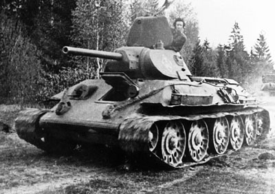
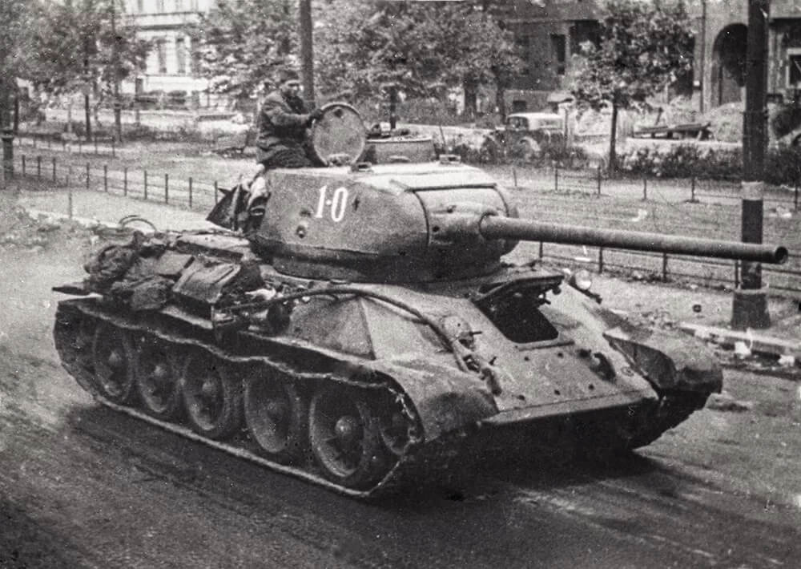
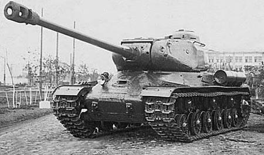
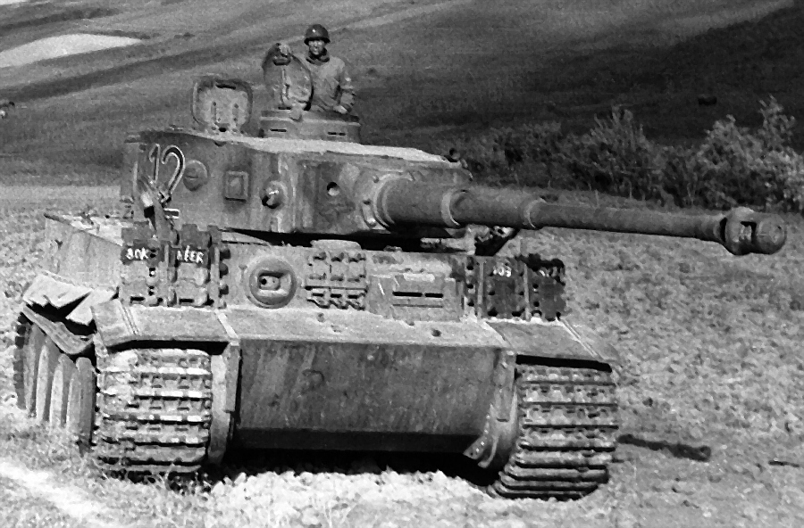
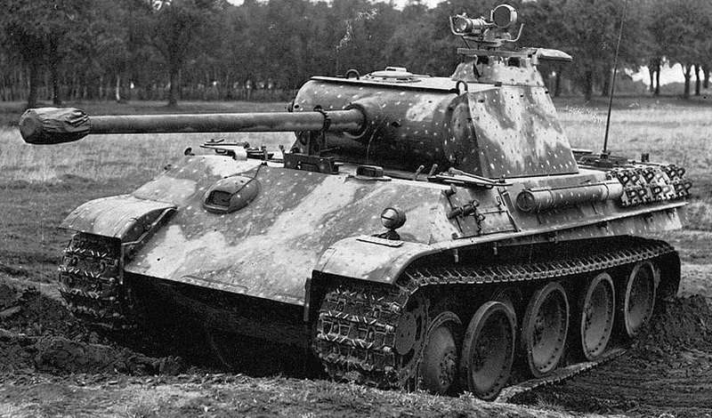
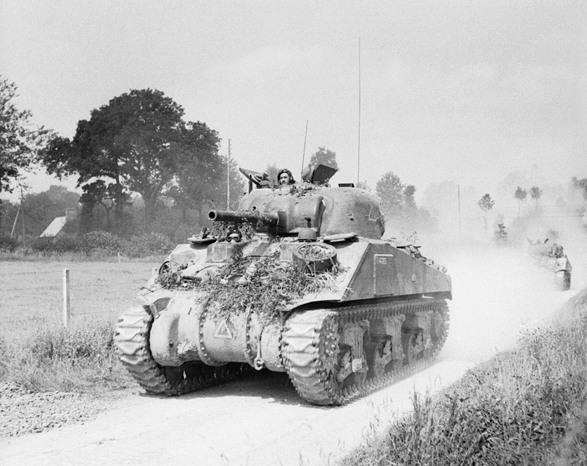
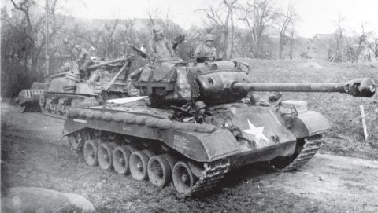

WW2
ZNACZĄCE BITWY
UZBROJENIE
↓ POJAZDY ↓
CZOŁGI
SAMOLOTY
OKRĘTY
POSTACIE
GALERIA
STRONA GŁÓWNA
Czołgi Rosyjskie
T-34

T-34 był jednym z podstawowych czołgów średnich wojska rosyjskiego.
Wprowadzony do produkcji w 1940 roku.
Uzbrojony w działo kalibru 76,2mm przbijało do 100mm pancerza z odległości 500m.
Obsługowany przez 4 osobową załogę.
Dowódca-działonowy
Ładowniczy
Kierowca-mechanik
Strzelec pokładowy-radiotelegrafista
Ważył 26,5t i rozpędzał się do 53 km/h po drodze.
T-34-85

T-34-85 to póżniejsza wersja zwykłego T-34 wyposażona w nową wierzę i działo 85mm skąd wzięła się jego nazwa.
Wprowadzony do produkcji w 1944 roku.
Uzbrojony w działo kalibru 85mm pozwalające przebijać do 138mm pancerza z 500m.
Obsługowany przez 5 osobową załogę.
Dowódca
Celowniczy
Ładowniczy
Kierowca-mechanik
Strzelec pokładowy-radiotelegrafista
Ważył 32t i rozpędzał się do 50-55 km/h po drodze.
IS-2

IS-2 były używane głównie jako czołgi przełamania. Stanowiły one samodzielne jednoski bezpośrednio podporządkowane Naczelnemu Dowództwu.
Wprowadzony do produkcji w 1943.
Uzbrojony w działo kalibru 122mm które bez żadnych problemów przebijało niemieckie czołgi ciężkie od frontu.
Obsługowany przez 4 osobową załogę.
Dowódca
Celowniczy
Ładowniczy
Kierowca-meniachik
Rozpędzał się do 37 km/h co przy wadze 46t jest całkiem dobrym wynikiem.
Czołgi Niemieckie
Tiger I

Panzerkampfwagen VI zwany inaczej "Tygrys" był odpowiedzią na powstające radzieckie T-34.
Wprowadzony do produkcji w 1942.
Uzbrojony w działo kalibru 88mm.
Obsługowany przez 5 osobową załogę.
Ważąc 5 6t rozpędzał się do 38 km/h.
Pantera wer.G

T-34-85 był jednym z podstawowych czołgów wojska rosyjskiego.
Wprowadzony do produkcji w 1944 roku.
Uzbrojony w działo kalibru 85mm pozwalające przebijać do 138mm pancerza z 500m.
Obsługowany przez 4 lub 5 osobową załogę.
Rozpędzał się do 50-55 km/h.
Czołgi Amerykańskie
M4 Sherman

T-34-85 był jednym z podstawowych czołgów wojska rosyjskiego.
Wprowadzony do produkcji w 1943 roku.
Uzbrojony w działo kalibru 85mm.
Obsługowany przez 4 osobową załogę.
Rozpędzał się do 50-55 km/h.
M26 "Pershing"

T-34-85 był jednym z podstawowych czołgów wojska rosyjskiego.
Wprowadzony do produkcji w 1944.
Uzbrojony w działo kalibru 85mm.
Obsługowany przez 4 lub 5 osobową załogę.
Rozpędzał się do 50-55 km/h.